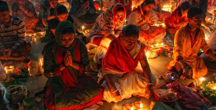
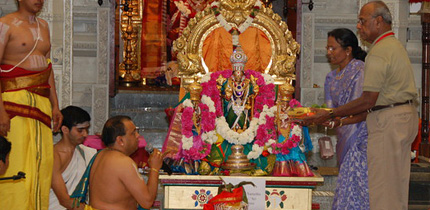

Religion
Hinduism
Since forever, my family has practiced Hinduism, a religion that has existed for over four millenia. Hindus around the world and over the generations have prayed to a multitude of gods and goddesses. In Bangladesh, my family celebrated big religious holidays, like Durga Puja, together all throughout the year. We would all return to our small village in the countryside and be merry until midnight.
Rituals and Traditions
Along with all the celebrations, Hinduism is filled with a great variety of rituals and traditions that have been ingrained into my family's heritage. Rituals, like Karthik Puja and Shiva Puja, have been passed down over the generations. Some require you to provide offerings, while others require you to fast. They are at the heart of one's devotion to the gods, along with daily prayer.

Being a Hindu in the New World
In the US, Hindus have prospered. Hindus are predominantly from the Indian subcontinent; however, over the years, a large population of non-Indian Hindus has developed. The Hindu community has become more diverse and more accepting of non-Indian cultures in the New World.

Like most Hindus in the US, my parents and I pray mainly at home and visit temples when we can. My father participates in religious plays at our temple and every year, during Durga Puja, they present their play as we celebrate our culture and heritage. However, over the years, I have become more and more estranged from my religion as secularization has taken hold.